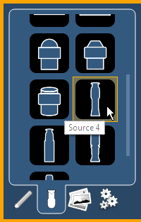
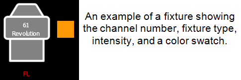
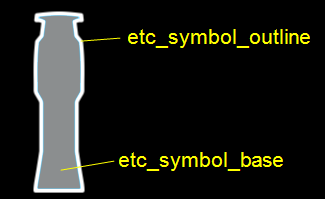

From the second tab, fixture symbols can be placed on a magic sheet. The symbols can be tied to a channel number. Information about that channel can be displayed with the symbol, such as intensity, FCB data, and error indicators. See MS Object Properties for more information on the customizing options available.

Additional fixture symbols can be imported. The symbol must be saved as a .svg image file, and needs to be tagged properly. These tags can be linked to the channel’s color, intensity or both.

The outline section needs to be tagged as etc_symbol_outline0, etc_symbol_outline, and/or etc_symbol_outline2. The base section needs to be tagged as etc_symbol_base0, etc_symbol_base, and/or etc_symbol_base2. Tags can be layered, and they will render in the order listed below:
Tags that only link to intensity will cause the base or outline to dim based on the channel’s intensity.
The edits to the tags in the .svg file can be made in any text editor program, such as Notepad, or in a .SVG editor program, such as Inkscape.
See Images for import steps.